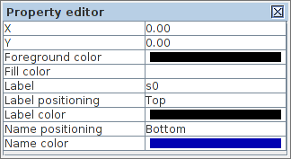
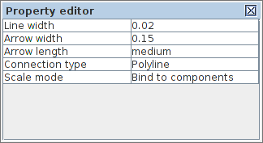

Table of Contents
Property editor
The Property editor panel enables displaying and modifying the attributes of a model and its elements. It has three distinctive modes of operation:
- Element properties. When a single element is selected its properties are displayed and are available for editing.
- Combined properties. When a group of elements is selected a “combined” list of their properties is displayed. Those properties which have the same name and class are combined under one editor item and its modification will propagate too all selected components of relevant class. If the initial value of the combined property cannot be agreed between the selected components an empty grey box is shown.
- Model properties. When no elements is selected the model-specific properties are displayed. This can be seen in the Policy Net plugin where a list of bundles is shown with a possibility to edit their names, colours and the list of bundled transitions.
The base list of properties depends on the element type but may be extended by the plugins implementing a particular interpreted graph model. The elements available in all the models are nodes, connections, groups and text notes.
Node properties

- X and Y - coordinates of the node relative to its container (a group or a root of the model)
- Foreground color - color of the node borders
- Fill color - color of the node background
- Label - text of the node label
- Label positioning - location of the label text relative to the node
- Label color - color of the label text
- Name positioning - location of the unique ID relative to the node
- Name color - color of the unique ID text
Note 1: There is a difference between the label and name of a node. The name is a unique ID of a node, often automatically generated by the tool and used for cross-referencing the model elements. The label is an arbitrary textual note associated with the node.
Note 2: The available positioning of node label and name are top, bottom, left, right, center, top-left, top-right, bottom-left, bottom-right.
Connection properties

- Line width - weight of the connection line
- Arrow width - width of the arrow head
- Arrow length - length of the connection arrow (none, small medium, large)
- Connection type - type of connection line (Polyline or Bezier curve)
- Scale mode - the way of scaling connection line when its adjacent nodes are moved (lock anchors, bind to components, proportional, stretched, adaptive)
Text note properties

- X and Y - coordinates of the node relative to its container (a group or a root of the model)
- Foreground color - color of the note borders
- Fill color - color of the note background
- Label - text of the note
- Label color - color of the text
Group properties

- X and Y - coordinates of the group relative to its container (a parent group or the graph root)